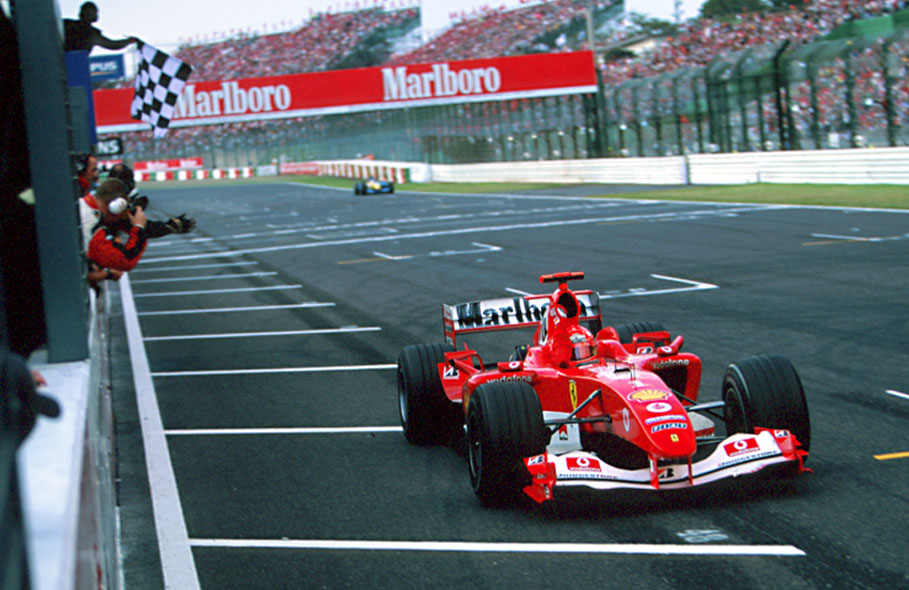
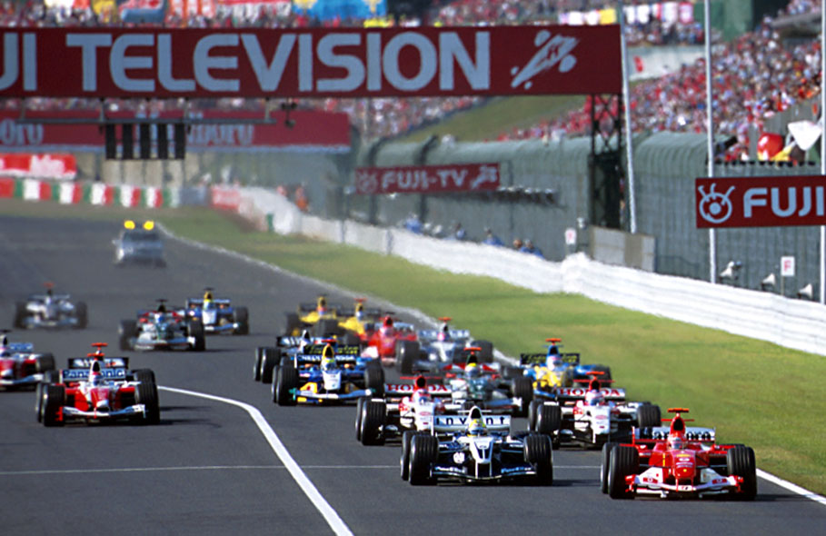
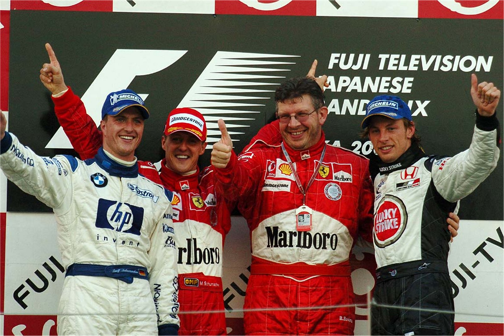

Suzuka - 10/10/2004
SHUMACHER: O TUFÃO DE SUZUKA

Arrasador, o piloto alemão marcou sua 63ª pole e chegou à 83ª conquista na Fórmula 1 no Grande Prêmio do Japão de 2004
LUÍS FERNANDO RAMOS
Após a passagem de um tufão pela região de Suzuka, causando uma situação inédita, a Fórmula 1 voltou à normalidade no Grande Prêmio do Japão. No entanto, o que marcou essa corrida não foi apenas o retorno à rotina, mas também a dominância impressionante de Michael Schumacher, que arrasou seus adversários ao longo de todo o fim de semana.
Schumacher, após três corridas pontuadas por azares e erros, finalmente reencontrou o caminho da vitória, conquistando seu 13º triunfo nesta temporada e o 83º de sua carreira na categoria. O piloto alemão, largando na pole position, estava confiante em sua performance excepcional: Praticamente garantimos a vitória na classificação. Dominamos o ano inteiro e não teria motivo para ser diferente aqui. Era evidente que tínhamos um bom ritmo de corrida, embora as condições da pista pudessem ter tornado a classificação desastrosa. Felizmente, tudo deu certo,
avaliou Schumacher.
Com 144 pontos, o piloto superou seu próprio recorde de maior pontuação em uma mesma temporada, ultrapassando os 142 pontos que havia alcançado em 2002. Schumacher estava imparável, mostrando seu domínio e consistência ao longo do campeonato.
No entanto, antes mesmo do início da corrida, os efeitos devastadores do ciclone tropical Ma-On já haviam causado estragos. Na sexta-feira, os treinos livres foram realizados em condições adversas devido à forte chuva, resultando em acidentes que vitimaram pilotos como Michael Schumacher, Timo Glock e Felipe Massa. O brasileiro Massa descreveu a dificuldade de se manter o carro na pista: Era quase impossível controlá-lo.
O tufão Ma-On também impactou o cronograma da corrida, com previsão de passagem sobre Suzuka no sábado à tarde, coincidindo com o horário programado para os treinos de classificação. Em uma decisão histórica, a FIA, juntamente com as equipes e pilotos, optou por transferir a definição do grid de largada para o domingo, poucas horas antes do início da corrida. Essa medida excepcional pela primeira vez na história da Fórmula 1 trouxe uma dose extra de imprevisibilidade para o evento.

Apesar dos transtornos causados pelo tufão, Michael Schumacher conseguiu manter o bom humor e brincou com os jornalistas, destacando que se tornou o único piloto na história da categoria a conquistar a pole position e vencer a corrida no mesmo dia. Sua supremacia nas pistas era inegável.
Além das mudanças no cronograma e dos desafios enfrentados pelos pilotos, o tufão também teve um impacto emocional nos integrantes do circo da Fórmula 1. Rubens Barrichello expressou a preocupação generalizada: Tem a turma dos assustados e a turma que está brincando com isso. Estou do lado dos apreensivos, a gente não conhece este tipo de coisa e fica sem saber o que pode acontecer
, falou Rubens Barrichello.
Para alívio geral, o ciclone mudou sua rota, fez uma curva à direita e deixou o caminho livre para a F1 seguir o seu show. O treino classificatório foi realizado com a pista em condições intermediárias e, curiosamente, premiou os pilotos que haviam tido um desempenho ruim na corrida anterior, o Grande Prêmio da China. Na pré-classificação, quem foi para a pista na parte final do treino marcou melhores tempos e garantiu a possibilidade de andar depois da maioria na sessão decisiva, quando a pista estaria ainda mais seca. Assim, Michael Schumacher marcou a pole-position, com seu irmão Ralf em 2° lugar. As surpresas vieram a seguir: Mark Webber conseguiu um surpreendente 3° lugar com a Jaguar, seguido pelo herói local Takuma Sato. Os dois brasileiros erraram em suas voltas rápidas e largaram lá atrás: Barrichello foi o 15° e Felipe Massa, que abortou sua tentativa, ficou em último.
Quando a corrida começou, o sol brilhava forte sobre o asfalto. Schumacher largou bem e abriu vantagem, relembrando algumas das exibições soberbas que fez no início da temporada. Após 13 voltas, fez seu primeiro pit stop e voltou à liderança, encerrando a disputa pela vitória em pouco menos de 20 minutos. Do 2° lugar para trás, a disputa foi bastante animada e proporcionou alguns dos melhores momentos do ano. Juan Pablo Montoya e Barrichello, que largaram no meio do pelotão, comandaram uma sucessão de ultrapassagens que movimentou a ordem da prova. A manobra mais bonita foi do brasileiro, quando passou o italiano Jarno Trulli em uma atitude ousada no final da reta principal.
A corrida de Barrichello seguiu empolgante. Marcou a melhor volta da corrida na 30ª passagem e continuou a recuperar terreno. Mas pagou bem caro por seu ímpeto: em outra ação arriscada, desta vez em cima de David Coulthard, o piloto da Ferrari teve a porta fechada pelo rival da McLaren. Incidente de corrida, ele não me viu
, absolveu o brasileiro. Foi seu primeiro abandono desde o Grande Prêmio da Hungria de 2003.
Em uma corrida longe de problemas, Ralf Schumacher subiu ao pódio pela primeira vez no ano com um 2° lugar. E semeou a paz em sua turbulenta relação com a equipe e os dirigentes da Williams. Ralf foi fantástico, fez o que era para ser feito
, disse o diretor técnico Patrick Head. Ele é um piloto rápido que merece bons resultados
, elogiou o exigente Frank Williams. O resultado praticamente assegurou à sua equipe o 4° lugar entre os construtores, superando a McLaren. Seus mecânicos também comemoraram bastante.
A BAR também fez muita festa. Com Jenson Button em
3° lugar e Takuma Sato em 4°, a equipe ficou a um passo de conquistar um inesperado vice-campeonato. A Renault acusou o golpe e praticamente jogou a toalha. Ficou muito difícil
, admitiu Flavio Briatore. Na pista que pertence à Honda, o público compareceu em peso para torcer pelo ídolo local, Takuma Sato. O japonês não fez feio, executou algumas boas ultrapassagens e só não subiu ao pódio porque a estratégia de uma parada a menos do seu companheiro de equipe mostrou-se a mais adequada.
Vale destacar também a corrida de Felipe Massa. O brasileiro largou em 19° (Zsolt Baumgartner largou dos boxes) e andou rápido o tempo inteiro durante a prova. No final, venceu uma bela disputa com Jacques Villeneuve e mostrou seu cartão de visitas para o companheiro de equipe da próxima temporada. O 9° lugar foi um resultado injusto para o bom desempenho de Massa, que não se importou: Me diverti muito e consegui boas ultrapassagens, o que me deixou satisfeito
, finalizou o piloto.
